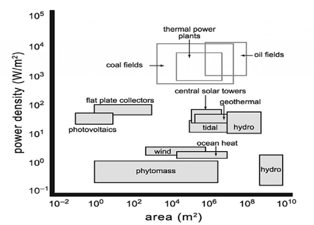

4 Energy Intensity
Energy intensity is a measure of the energy inefficiency of an economy. It is calculated as units of energy per unit of GDP.
GDP and energy consumption per capita variables are cointegrated and Granger cause each other. First conclusion would be that energy consumption per capita affects GDP per capita. In other words, a growth or reduce in energy consumption will increase or decrease GDP. Energy consumption plays an important role on economic growth, directly on labor and capital component and indirectly on production process as well. Electric consumption is an incentive factor and indis- pensable insurance for a sustainable economic growth. Second conclusion would be that GDP per capita affects energy consumption per capita. That is, an increase or decrease GDP per capita will increase or decrease energy consumption per capita. Developing countries that are increasing their aggregate GDP and their production are subject to demand more and more energy sources. Countries that are in short providing the appropriate energy demand will be importing energy. This might eventually cause current and trade deficit.
Yildirim (2017) Economic Growth and Energy Consumption OECD (pdf)
4.1 Power Density
Smil (Book)
In this book, Vaclav Smil argues that power density is a key determinant of the nature and dynamics of energy systems. Any understanding of complex energy systems must rely on quantitative measures of many fundamental variables. Power density—the rate of energy flux per unit of area—is an important but largely overlooked measure. Smil provides the first systematic, quantitative appraisal of power density, offering detailed reviews of the power densities of renewable energy flows, fossil fuels, thermal electricity generation, and all common energy uses.
Smil shows that careful quantification, critical appraisals, and revealing comparisons of power densities make possible a deeper understanding of the ways we harness, convert, and use energies. Conscientious assessment of power densities, he argues, proves particularly revealing when contrasting the fossil fuel–based energy system with renewable energy conversions.
Smil explains that modern civilization has evolved as a direct expression of the high power densities of fossil fuel extraction. He argues that our inevitable (and desirable) move to new energy arrangements involving conversions of lower-density renewable energy sources will require our society—currently dominated by megacities and concentrated industrial production—to undergo a profound spatial restructuring of its energy system.
Vaclav Smil (2015) Power Density (Book)
Smil (Primer)
Many factors combine to determine their technical difficulty, their cost and their environmental impacts. A great deal of attention has been recently paid to the pace of technical innovation needed for the shift from the world dominated by fossil fuel combustion to the one relying increasingly on renewable energy conversions, to the likely costs and investment needs of this transitions, and to its environmental benefits, particularly in terms of reduced CO 2 emissions. Inexplicably, much less attention has been given to a key component of this grand transition, to the spatial dimension of replacing the burning of fossil fuels by the combustion of biofuels and by direct generation of electricity using water, wind, and solar power. Perhaps the best way to understand the spatial consequences of the unfolding energy transition is to present a series of realistic power density calculations for different modes of electricity generation in order to make revealing comparisons of resources and conversion techniques. Detailed calculations will make it easy to replicate them or to change the assumptions and examine (within realistic constraints) many alternative outcomes.
Energy Density vs Power Density
Energy density is easy – power density is confusing. Energy density is simply the amount of energy per unit weight (gravimetric energy density) or per unit volume (volumetric energy density). With energy expressed (in proper scientific terms) in joules or less correctly in calories (and in the US, the only modern state that insists on using outdated non-metric measures, in BTUs), with weight in grams (and their multiples), and with volume in cubic centimeters, liters (dm 3 ) or cubic meters, energy density is simply joules per gram (J/g) or joules per cubic centimeter (J/cm 3 ) or, more commonly, megajoules per kilogram (MJ/kg) and megajoules per liter (MJ/L) or gigajoules per ton (GJ/t) and gigajoules per cubic meter (GJ/m 3 ).
Power density is a much more complicated variable. Power density expressed as energy flux per unit of horizontal surface universal. \(W/m^{2}\) of horizontal area of land or water surface has been receiving more attention because of the growing interest in renewable energy resources and their commercial conversions to fuels and electricity. Invariably, power densities of these stocks and flows are considerably lower than power densities and uses of fossil fuels, those highly concentrated stores of ancient photosynthetic production – and these differences are a key factor in determining the potential contribution of renewable energies to the world’s future fuel and electricity supply.
| Power Source | Power | Density (\(W/m^{2}\)) |
|---|---|---|
| Natural Gas | 200 | 2000 |
| Coal | 100 | 1000 |
| Solar (PV) | 4 | 9 |
| Solar (CSP) | 4 | 10 |
| Wind | 0.5 | 1.5 |
| Biomass | 0.5 | 0.6 |
Implications of these differences are manifold. Changing the power density-determined infrastructure of energy systems that were created over more than a century for electricity generation from fossil fuel combustion will not be easy. A fossil-fuelled civilization has been securing the supply of its most flexible form of energy by “shifting downward,” that is by generating electricity with power densities 1-3 orders of magnitude higher than the common power densities with which electricity is used in buildings, factories and cities. In a civilization that would rely only on renewable energy flows, but that would inherit today’s urban and industrial systems, we would produce electricity at best with the same power densities with which they would be used –- but more often we would have to concentrate diffuse flows of solar radiation, wind, and biomass in order to bridge power density gaps of 2-3 orders of magnitude. This new energy infrastructure would increase fixed land requirements and preempt any other form of land use in areas devoted to PV cells, heliostats or fast-growing wood plantations. Most of the area occupied by large wind farms could be used for crops or grazing but other land uses would be excluded, and large areas dotted with wind turbines would require construction and maintenance of access roads as well as the creation of buffer zones not suitable for permanent human habitation. And in all cases of renewable energy conversion, much more land would be needed for more extensive transmission rights-of-way in order to export electricity from sunny and windy regions, or from areas suited for mass-scale biomass production, to major urban and industrial areas.

Figure: Power densities of fossil fuel extraction, thermal electricity generation and renewable modes of electricity production.
As a result, these new energy infrastructures would have to be spread over areas ten to a thousand times larger than today’s infrastructure of fossil fuel extraction, combustion and electricity generation: this is not an impossible feat, but one posing many regulatory (environmental assessments of affected areas, rights-of-way permission and inevitable lawsuits), technical and logistic challenges. Higher reliance on renewable energies may be desirable (mainly because of perceived environmental and strategic reasons) and technical advances would also make it an increasingly appealing economic choice –- but inherently low power densities of these conversions will require a new system of fuel and electricity supply that will be able to substitute for today’s dominant practices only after decades of gradual development.